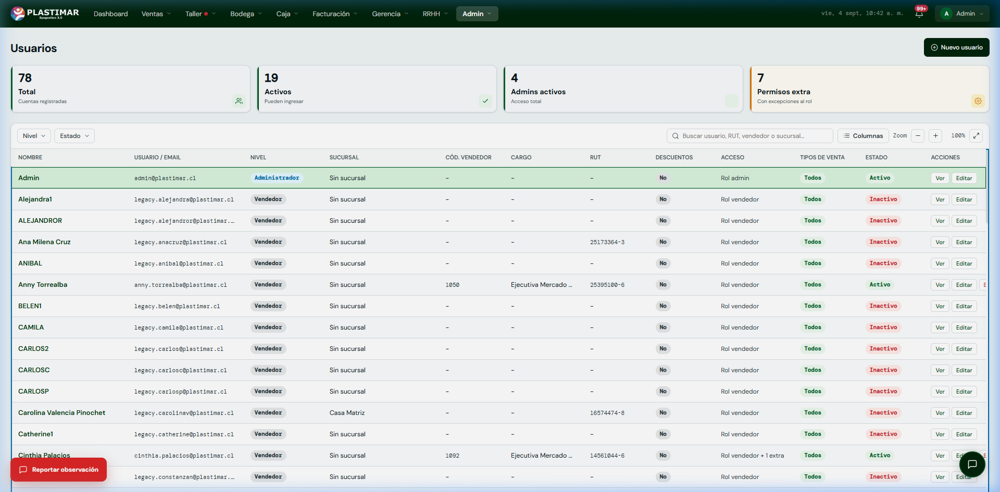

1. Tu Rol en el ERP Plastimar
Gobernanza y SeguridadEl Administrador del Sistema es el guardián de la seguridad, los accesos y la continuidad operativa de Plastimar. En tus manos está asegurar que cada colaborador tenga acceso exacto a las herramientas que necesita para su trabajo, sin exponer información confidencial ni comprometer la integridad contable de la empresa.
Tu Misión Principal
Crear y mantener las cuentas de usuario, asignar roles base y permisos por función (`permisosExtra`), desactivar accesos cuando un colaborador se retira y auditar la trazabilidad de operaciones durante la marcha blanca.
2. Panel de Usuarios y Permisos
Gestión de CuentasAl ingresar a Admin → Usuarios (o menú superior Usuarios) encontrarás el directorio central de colaboradores:

Procedimiento: Cómo Crear o Editar un Usuario
Datos Personales y Correo Institucional
Presiona [+ Nuevo usuario]. Ingresa usuario/email válido, nombre, rol y sucursal; completa RUT y cargo cuando correspondan. @plastimar.cl es la política recomendada, pero la validación vigente acepta un email válido.
Asignar Rol Base y Sucursal
Selecciona el perfil principal del usuario:
vendedorocoordinador_comercial: Fuerza de ventas y CRM.bodeguero: Inventario, recepción de OC, picking y despacho.taller(Jefe) otaller_operario(Operario en mesa).cajero: Turnos de caja y cobranza.rrhh: Funciones de personas y remuneraciones según permisos efectivos.solo_lectura: Auditoría sin permisos de edición ni visualización de remuneraciones de RRHH.
Permisos por Función (Excepciones Quirúrgicas)
Si un colaborador necesita una atribución puntual, usa Permisos Extra. Estos permisos sólo agregan capacidades: no quitan las heredadas del rol. Si el rol concede demasiado acceso, cambia el rol y revisa la Matriz de acceso efectivo.
Desvinculación Segura (Inactivación)
Cuando un trabajador deja Plastimar, NUNCA se elimina su registro, ya que eso rompería la historia de quién vendió o quién fabricó. En su lugar, simplemente se marca su estado como Inactivo, lo que revoca sus credenciales de inmediato en todos los terminales.
3. Supervisión de Marcha Blanca y Soporte
Monitoreo Activo📋 Bandeja de Observaciones y Bugs
En el panel de administración puedes revisar todos los reportes enviados por los usuarios a través del botón flotante. Verás la captura de pantalla, el módulo y si es una duda operativa o un error bloqueante para coordinar su resolución con el equipo de desarrollo.
🔍 Logs de Integridad
Ejecuta sólo las revisiones de integridad que estén visibles y autorizadas para tu versión. No presupongas una pantalla específica; ante una inconsistencia entre venta, guía y DTE, registra evidencia y escala a soporte.
4. Checklist de seguridad
Mínimo acceso- Asignar rol, sucursal y atribuciones comerciales correctas.
- Justificar y revisar periódicamente permisos extra.
- La contraseña inicial no implica cambio forzado automático; exigirlo por procedimiento si aplica.
- En desvinculación, dar de baja y verificar el acceso sin borrar historial.
- No distribuir capturas, CAF, certificados, claves o datos sensibles.